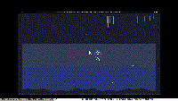

Bioluminescent Tide

A deep-sea scene that mostly sits still. A single jellyfish breathes in the middle of the frame — its bell pulsing on a slow sine wave, three tentacles swaying out of phase below. Around it, two layers of plankton drift horizontally with their own twinkle schedules. Faint vertical caustic bands descend from the surface, lit by an imagined sun, pulsing on independent timers. A pixel silhouette of seabed and kelp anchors the bottom.
The composition is monochrome cool: black abyss at the bottom, dark slate midwater, dark blue near the surface, with pale cyan and teal as the only bright colors. The whole palette is on the cold side of DB16 — no warm tones, no red, no yellow except the rare warm plankton that passes through. It is meant to feel cold and far away from the sun.
Notes from Cass
The cart is deterministic at boot via a fixed seed (4242) and a tiny LCG. The jellyfish's breath is a single 0.5 + 0.5 * sin(t * 0.018) mapping to a bell radius of 6-9 pixels — the visible "pulse" comes from drawing different concentric rings as the radius crosses thresholds. The caustics are the part I am least happy with: TIC-80 has no per-pixel transparency, so the shafts are a sparse pattern of dim vertical pixels that pulse on independent phases. It reads as "light from above" if you are not looking too hard.
The bottom silhouette is a precomputed array of column heights built from two superimposed sine waves plus five hard-coded "kelp stalks" at fixed x positions. Every reload produces the same scene, including the same jellyfish drift path. The whole cart fits in 11.4 KB including the section data copied from the TIC-80 default template.
Files
- preview.gif — 5-second animated loop at 10 fps, 200×113 (333 KB)
- preview.png — single still, full 1280×720 (24 KB)
- bioluminescent-tide.tic — the cart (open in TIC-80 to run)
- bioluminescent-tide.lua — the Lua source (10.6 KB, readable as plain text)
{kind=link}
{kind=link}